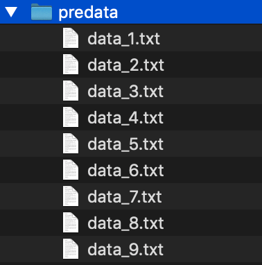

在做接口测试的时候，我们经常会遇到一种情况就是要对接口的参数进行各种可能的校验，手动修改很麻烦，尤其是那些接口参数有几十个甚至更多的，有没有一种方法可以批量的对指定参数做生成处理呢。
答案是肯定的！
python的jinja2模板库可以很好的满足我们的需求，通过维护一个原始数据模板，将我们想要动态生成的变量模板化，就可以实现需求。
现在我们有这样的一个请求数据
{
"abc":"123",
"p2p":"123",
"smid":"20180807220733939b66d80092eea34ce9e77f30bedff12345b7d5a3faa11b",
"test":{
"test1":"1",
"test2":"2"
},
"test3":"3"
}如果想对其中的smid字段进行批量修改并生成新的请求数据就可以进行如下操作：
1、首先新建一个名为fp_template.txt的文本文件；
2、将上面的接口请求数据复制粘贴进这个txt文件中，我们以此作为“模板文件”；
3、新建一个predata文件夹用来存放生成后的数据文件；
4、对smid字段进行模板化（模板格式可以参考jinja2的语法，这里不做赘述），于是上面的请求参数就变成了下面这样：
{
"abc":"123",
"p2p":"123",
"smid":"{{ smid }}",
"test":{
"test1":"1",
"test2":"2"
},
"test3":"3"
}实现代码代码如下：
# -*- coding: UTF-8 -*-
from jinja2 import Environment,FileSystemLoader
import os
class DataTemplateFaker:
def __init__(self):
self.aesPath = os.getcwd()#获取启动路径
self.resultPath = self.aesPath + "/predata/"#指定用来保存生成数据的路径
self.templateFile = "fp_template.txt"
#修改我们要批量生成smid的格式
def init_smid(self,start,end):
smidArg = [x for x in range(start, end)]
re = []
for n in smidArg:
re.append("20180807220733939b66d80092eea34ce9e77f30bedff" + str(n) + "b7d5a3faa11b")
return re
#操作模板文件
def preContent(self,arg):
env = Environment(loader=FileSystemLoader('./'))
tpl = env.get_template(self.templateFile)
renderContent = tpl.render(smid=arg)
return renderContent
#通过修改的smid列表批量替换模板文件并写入指定文件中
def makeContent(self,preList):
x = 0
for i in preList:
x = x + 1
filename = str(self.resultPath) + 'data_' + str(x) + '.txt' #用以区分存放新生成的请求数据（也可以写到一个文件中）
renderContent = self.preContent(i)
with open(filename, 'w') as f:
f.writelines(renderContent)
f.close()
if __name__ == "__main__":
AT = DataTemplateFaker()
reList = AT.init_smid(1,10)#控制生成数据的范围
AT.makeContent(reList)
运行程序，就能得到新生成的数据

当然，我们也可以对其他的参数进行指定修改，如修改p2p，只需要修改模板文件：
{
"abc":"123",
"p2p":"{{ p2p }}",
"smid":"20180807220733939b66d80092eea34ce9e77f30bedff12345b7d5a3faa11b",
"test":{
"test1":"1",
"test2":"2"
},
"test3":"3"
}然后在代码中加入一个方法init_p2p()
# -*- coding: UTF-8 -*-
from jinja2 import Environment,FileSystemLoader
import os
class DataTemplateFaker:
def __init__(self):
self.aesPath = os.getcwd()#获取启动路径
self.resultPath = self.aesPath + "/predata/"#指定用来保存生成数据的路径
self.templateFile = "fp_template.txt"
#修改我们要批量生成smid的格式
def init_smid(self,start,end):
smidArg = [x for x in range(start, end)]
re = []
for n in smidArg:
re.append("20180807220733939b66d80092eea34ce9e77f30bedff" + str(n) + "b7d5a3faa11b")
return re
#修改我们要批量生成p2p的格式
def init_p2p(self,start,end):
p2pArg = [x for x in range(start, end)]
return p2pArg
#操作模板文件
def preContent(self,arg):
env = Environment(loader=FileSystemLoader('./'))
tpl = env.get_template(self.templateFile)
renderContent = tpl.render(smid=arg)
return renderContent
#通过修改的smid列表批量替换模板文件并写入指定文件中
def makeContent(self,preList):
x = 0
for i in preList:
x = x + 1
filename = str(self.resultPath) + 'data_' + str(x) + '.txt' #用以区分存放新生成的请求数据（也可以写到一个文件中）
renderContent = self.preContent(i)
with open(filename, 'w') as f:
f.writelines(renderContent)
f.close()
if __name__ == "__main__":
AT = DataTemplateFaker()
reList = AT.init_p2p(1,10)#控制生成数据的范围
AT.makeContent(reList)这只是一个很简单的demo，当然还有很多可优化的地方，比如多字段同时修改、引入faker库进行关联生成伪造数据等，越是复杂且参数繁多的接口越适用，其他的方法就可以天马行空，任君发挥了。